消防车
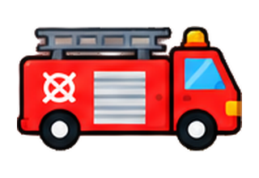
01_fire-truck平滑版提高拐角平滑阈值、加大微小色块过滤、合并接近颜色并简化路径。SVG 是独立矢量路径；54 号停车牌的字母只在转换结果中去掉，原 PNG 仍保留。

01_fire-truck02_ambulance03_police-car04_bus05_cargo-truck06_delivery-truck07_excavator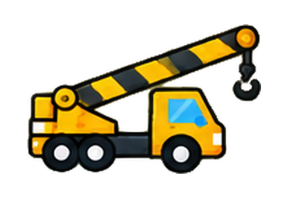
08_crane-truck09_cement-mixer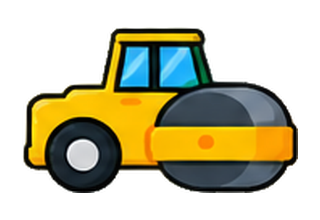
10_road-roller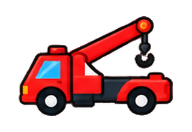
11_tow-truck12_garbage-truck13_dump-truck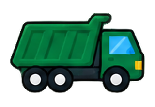
14_tipper-truck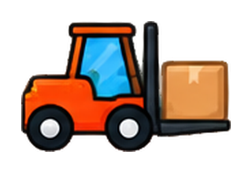
15_forklift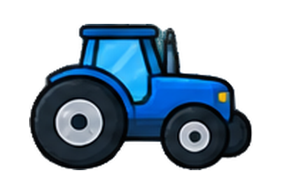
16_tractor17_fuel-tanker18_street-sweeper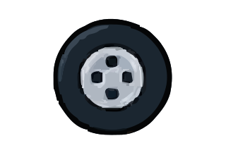
19_wheel20_toolbox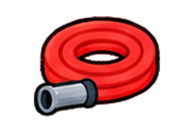
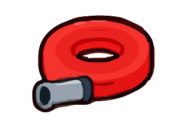
21_hose22_bucket23_hard-hat24_traffic-cone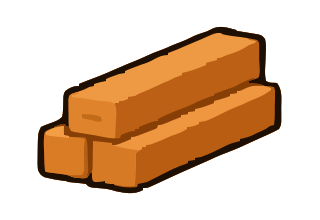
25_wood-planks26_wooden-crate27_parcel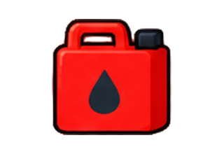
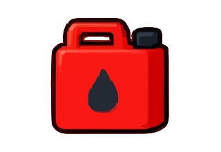
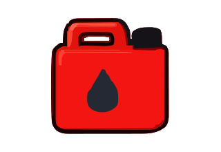
28_fuel-can29_ladder30_construction-barrier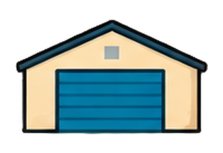
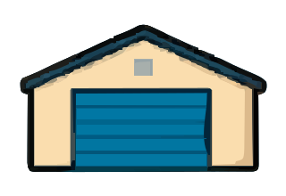
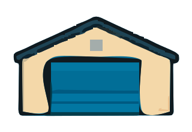
31_warehouse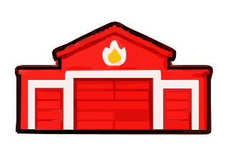
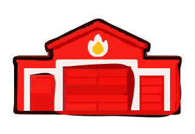
32_fire-station33_construction-site34_shop35_hospital36_factory37_round-tree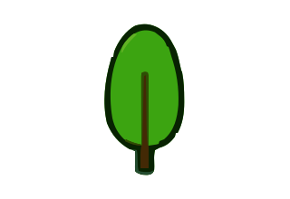
38_tall-tree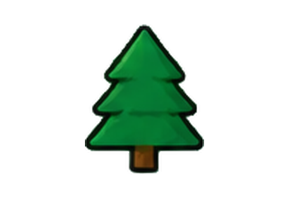
39_pine-tree40_round-bush41_flower-bush42_small-hill-bush43_cloud44_double-cloud45_layered-cloud46_grass-hill47_green-hills48_rocks49_straight-road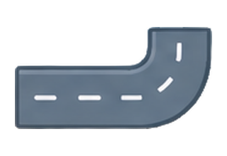
50_curve-road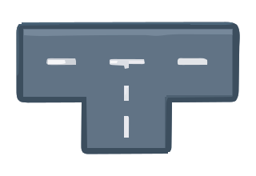
51_t-junction52_crossroads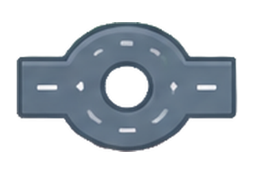
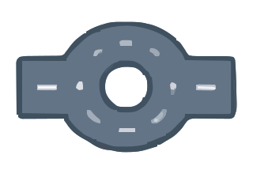
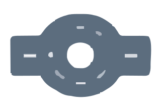
53_roundabout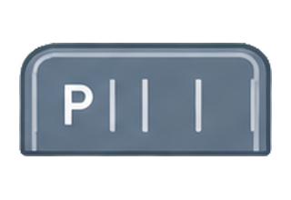
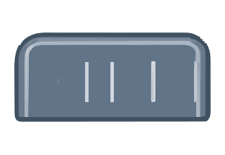
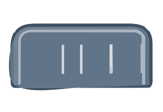
54_parking-lot55_white-fence56_wood-fence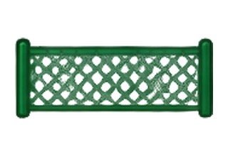
57_green-mesh-fence58_road-barrier59_chevron-sign60_streetlamp